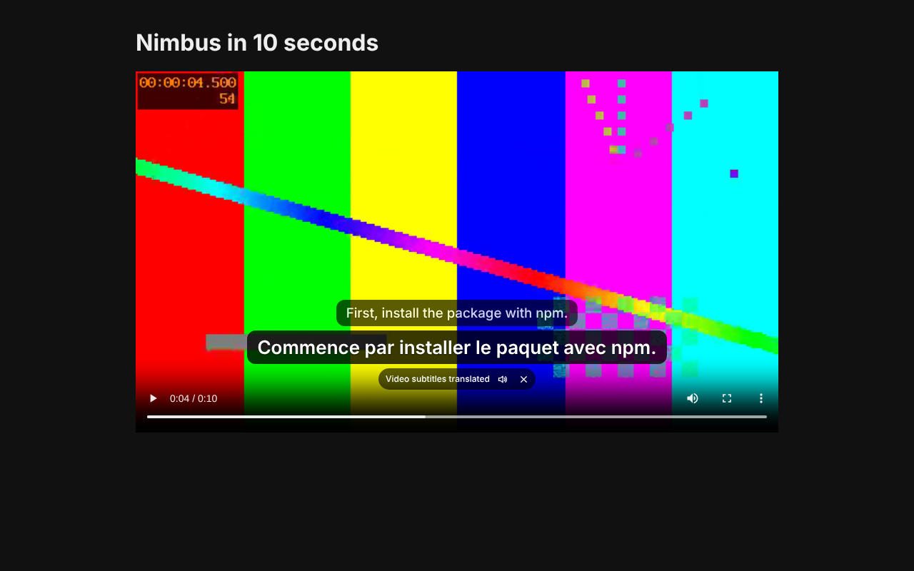

Πιστή μετάφραση
Πρόταση προς πρόταση, με την ίδια σειρά, χωρίς περίληψη, παραλείψεις ή προσθήκες. Η επέκταση μεταφράζει, δεν εξηγεί.
Νέο στην 1.1: η φωνή των βίντεο μεταφρασμένη σε υπότιτλους
Μεταφράζει πιστά την τεχνική τεκμηρίωση και τους ιστότοπους για προγραμματιστές στη γλώσσα σου, χωρίς να αγγίζει ποτέ τον κώδικα.

Για όλους όσοι παλεύουν με τεκμηρίωση σε ξένη γλώσσα: επίσημη τεκμηρίωση, README και issues στο GitHub, Stack Overflow, φόρουμ, τεχνικά ιστολόγια, ομιλίες συνεδρίων.
Πρόταση προς πρόταση, με την ίδια σειρά, χωρίς περίληψη, παραλείψεις ή προσθήκες. Η επέκταση μεταφράζει, δεν εξηγεί.
Εντολές, συναρτήσεις, API, διαδρομές και URL δεν μεταφράζονται ποτέ. Σύνδεσμοι, έντονα και μπλοκ κώδικα μένουν στη θέση τους.
Από προεπιλογή η γλώσσα του προγράμματος περιήγησης, ανάμεσα σε 37 γλώσσες. Ένας Ρώσος προγραμματιστής παίρνει ρωσικά, ένας Ιάπωνας ιαπωνικά.
Μαθήματα και ομιλίες: οι υπότιτλοι μεταφράζονται ζωντανά πάνω στο βίντεο, και στο YouTube. Χωρίς υπότιτλους; Η φωνή απομαγνητοφωνείται δωρεάν (Groq Whisper). Προαιρετική ανάγνωση φωναχτά.
Δωρεάν επίπεδα των Gemini, Groq, Mistral, OpenRouter ή τοπικά το Ollama. Ένα επί πληρωμή κλειδί μένει μπλοκαρισμένο μέχρι να ορίσεις όριο.
Αντικαθιστά το κείμενο ή δείχνει τη μετάφραση κάτω από κάθε πρόταση. Ένα κλικ ή Alt+Shift+T για επιστροφή στο ακριβές πρωτότυπο.
Χωρίς στατιστικά, χωρίς παρακολούθηση. Τα κλειδιά μένουν στον browser σου. Οι ευαίσθητες σελίδες δεν μεταφράζονται ποτέ αυτόματα.
Ένα κομμάτι τεκμηρίωσης στα αγγλικά. Άλλαξε λειτουργία: το κείμενο περνά στη γλώσσα σου, ο κώδικας μένει ίδιος.
Call readFile() to load the file, then JSON.parse() to turn it into an object.Κάλεσε τη readFile() για να φορτώσεις το αρχείο και μετά τη JSON.parse() για να το κάνεις αντικείμενο.
import { readFile } from "node:fs/promises";
const text = await readFile("config.json", "utf8");
const config = JSON.parse(text);All options in the API referenceΌλες οι επιλογές στην τεκμηρίωση αναφοράς του API
Το μπλοκ κώδικα, τα ονόματα των συναρτήσεων και ο σύνδεσμος είναι ίδια και στις τρεις λειτουργίες.
Μια ομιλία στα αγγλικά: η μετάφραση εμφανίζεται ζωντανά πάνω στην εικόνα, κάτω από την αρχική πρόταση. Εδώ, μια προσομοίωση.
npm install lru-cache.Πρώτα, εγκατάστησε τη βιβλιοθήκη με npm install lru-cache.fetch() with cachedFetch().Μετά, αντικατάστησε κάθε κλήση της fetch() με cachedFetch().



Firefox: με ένα κλικ από το addons.mozilla.org. Chrome, Edge και Brave: χειροκίνητα με λίγα κλικ, μέχρι τη δημοσίευση στα καταστήματα.
chrome://extensions (ή edge://extensions, brave://extensions).Εγκατάσταση από το addons.mozilla.org
Firefox 140 ή νεότερο. Οι ενημερώσεις έρχονται μόνες τους.
about:debugging#/runtime/this-firefox.:free), ή εγκατάστησε το Ollama. Για τη φωνή βίντεο χωρίς υπότιτλους, χρησιμοποίησε Groq.Ναι. Η επέκταση είναι δωρεάν και ανοιχτού κώδικα. Χρησιμοποιεί τα δικά σου κλειδιά στα δωρεάν επίπεδα των παρόχων ή το Ollama στον υπολογιστή σου. Δεν περνά ποτέ σε κλειδί επί πληρωμή, και ένα τέτοιο κλειδί μένει μπλοκαρισμένο μέχρι να ορίσεις εσύ ημερήσιο όριο.
Η ενσωματωμένη μετάφραση μεταφράζει και ονόματα συναρτήσεων, εντολές και μερικές φορές κώδικα, και συχνά χαλάει τη διάταξη. Το DevDocTrad εντοπίζει τον κώδικα, τα αναγνωριστικά και τα URL για να μην τα αγγίξει ποτέ, κρατά συνδέσμους και μορφοποίηση και μπορεί να δείχνει πρωτότυπο και μετάφραση δίπλα δίπλα.
Ενεργοποίησε το «Μετάφραση της φωνής στα βίντεο» στο αναδυόμενο παράθυρο ή πάτησε Alt+Shift+V. Αν το βίντεο έχει υπότιτλους (YouTube, ομιλίες, μαθήματα), μεταφράζονται και εμφανίζονται στην εικόνα. Αλλιώς ο ήχος κόβεται σε κομμάτια λίγων δευτερολέπτων, απομαγνητοφωνείται από το Groq Whisper με το δωρεάν κλειδί σου Groq και μετά μεταφράζεται. Το κουμπί ηχείου διαβάζει τη μετάφραση με τη φωνή του browser. Τίποτα δεν πληρώνεται.
Αποθηκεύονται μόνο στον τοπικό χώρο του browser, δεν συγχρονίζονται ποτέ και στέλνονται μόνο στον αντίστοιχο πάροχο. Δεν εμφανίζονται ποτέ σε URL, αρχείο καταγραφής ή μήνυμα προς σελίδα.
Μόνο στον πάροχο που διάλεξες, ή πουθενά με το Ollama. Στα δωρεάν επίπεδα, η Google και η Mistral μπορεί να επαναχρησιμοποιήσουν το κείμενο: για ιδιωτικές σελίδες προτίμησε το Ollama. Για τη φωνή, στο Groq πηγαίνουν μόνο σύντομα κομμάτια ήχου.
37 γλώσσες-στόχοι, ανάμεσά τους ελληνικά, αγγλικά, γαλλικά, ισπανικά, γερμανικά, ρωσικά, κινεζικά, ιαπωνικά και αραβικά. Οι σελίδες μπορεί να είναι σε οποιαδήποτε γλώσσα. Η διεπαφή της επέκτασης υπάρχει σε 36 γλώσσες (αραβικά, εβραϊκά και περσικά από δεξιά προς αριστερά) και ακολουθεί τον browser. Και αυτός ο ιστότοπος υπάρχει σε 37 γλώσσες.
Ναι, άδεια MIT: μπορείς να τον χρησιμοποιήσεις, να τον τροποποιήσεις και να τον αναδιανείμεις, αρκεί να κρατήσεις τη σημείωση της άδειας.